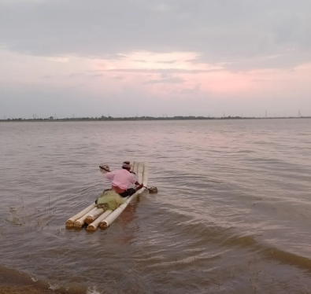

Nathapettai Lake is a serene freshwater lake located approximately 3 kilometers from the old railway station in Kanchipuram, Tamil Nadu. Spanning about 250 hectares, it is fed by the Palar River and serves as a vital water source for local agriculture and fishing communities.